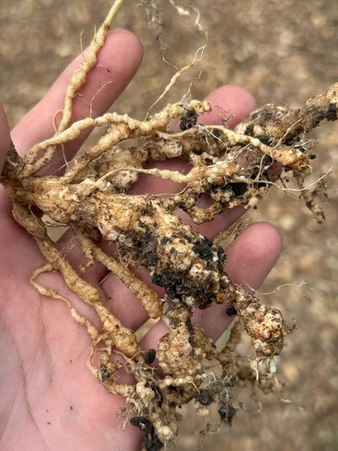

Distorted roots

What to look for
Look for roots circling the pot, forks near a hard obstruction, or swellings within the root tissue. Include a ruler in a photograph.
Possible causes and next steps
Crowding and soil pests can both alter roots. Check pot space and soil structure first. Ask a local plant clinic to identify unexplained galls on the host species.
How to tell similar problems apart
A swelling formed from plant tissue stays attached. Compare it with normal buds, graft unions or, on certain legumes, regular root nodules.
What to do now
Photograph the swelling in place and record its position on the plant. Avoid cutting into a main stem or repeatedly disturbing roots just to inspect it.
What to check next
Seek identification if growth weakens or enlarging swellings surround the crown. Include a photo of the entire plant for scale.